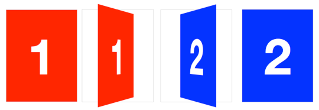

CSS
利用CSS3制作卡片翻转效果
下面是制作3D卡片翻转效果必要的HTML代码结构：
<section class="container">
<div id="card">
<figure class="front">1</figure>
<figure class="back">2</figure>
</div>
</section>
section.container将用于制作3D空间。#card作为3D对象的包装器，它里面两个单独的"figure"元素是卡片的正反两面。虽然是一个是否简单的结构，但是我们强烈建议在使用3D transform时都使用相似的结构模式。保证3D空间和3D对象都建立在一种特定的模式下，既易于查看，也易于添加样式。
下面要为它们添加样式，首先给3D空间元素.container一个perspective属性。然后随便给它一个大小和一个相对定位方式。
.container {
width: 200px;
height: 260px;
position: relative;
perspective: 800px;
}
现在，#card元素可以在它的父元素里面被转换为3D对象。我们这里使用了相对/绝对的定位方式，所以3D对象会被从文档流中移除。我们还会为3D对象添加width:100%;和height:100%;，这可以确保3D对象的transform-origin出现在容器的中间。
我们再用CSS3 transition来添加一点过渡效果，以便于更好的观察效果：
#card {
width: 100%;
height: 100%;
position: absolute;
transform-style: preserve-3d;
transition: transform 1s;
}
.container的perspective效果只对直接后代元素起作用，在这个例子中是#card。为了让#card的后代元素也继承父元素的perspective效果，并且是在同一个3D空间中，可以在#card元素上使用transform-style: preserve-3d属性。如果没有设置3D transform-style，卡片的表面将是扁平的，也不会有卡片的翻转效果。
为了在3D空间中定位卡片的两个面，我们需要通过2D position: absolute来重置它们的定位。为了隐藏卡片的反面，可以使用backface-visibility: hidden。
#card figure {
display: block;
position: absolute;
width: 100%;
height: 100%;
backface-visibility: hidden;
}
为了翻转卡片的反面.back，我们添加了一个基本的3D transform rotateY( 180deg )。
#card .front {
background: red;
}
#card .back {
background: blue;
transform: rotateY( 180deg );
}
当卡片翻转后，#card需要一个相应的翻转后的样式。
#card.flipped {
transform: rotateY( 180deg );
}
现在我们已经制作好了一个3D卡片，要想翻转卡片，只需要切换它的flipped样式。当卡片应用.flipped class的时候，卡片会翻转180度，这样卡片的背面就翻转到了前面。
如果仔细观察，会发现网上的某些3D翻转效果和我们上边的例子的效果有些不同，它们不是沿中心轴进行翻转的。如果你使用右边为轴进行翻转，你会发现卡片会翻出容器之外。这不仅仅是翻转了卡片，还使卡片的的边从右边移动到了左边，我们可以通过修改DEMO1中的一些代码来使卡片沿右边翻转，而且不会超出容器之外。
我们要做的是让翻转的中心点位于卡片的右边。默认情况下中心点transform-origin是位于水平和垂直的中间（50 % 50% 或 center center），我们需要改变它：
#card { transform-origin: right center; }
然后又通过translateX来在水平方向上往回移动一些距离。并且设置它rotateY( -180deg )，这样它就可以正常翻转了。
#card.flipped {
transform: translateX( -100% ) rotateY( -180deg );
}